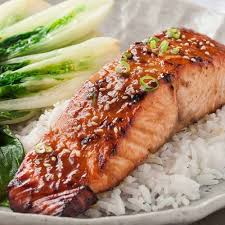

Asian Glazed Salmon

Description
Super fast to make, it takes longer to cook the rice than this EASY Asian
Salmon! The marinade only requires 5 ingredients – ginger, garlic, oyster
sauce, sweet chili sauce and soy sauce. But it certainly tastes like it’s
got more in it!
Ingredients
- 2 x 180g / 6oz salmon fillets
- Oil spray
- 1 tsp fresh ginger
- 1 garlic clove
- 1 tbsp soy sauce
- 2 tbsp oyster sauce
- 2 tbsp sweet chili sauce
Steps
-
Marinade salmon – Combine the Marinade ingredients in a shallow bowl.
Add salmon and turn to coat. Cover and marinate for 30 minutes or up to
overnight.
-
Preheat grill/broiler on high. Place the rack 25 cm / 10" from the heat
source.
-
Glaze – Place salmon on baking tray (no oil required, no paper – it will
burn). Dab glaze onto the salmon, whatever will stick. Don't pour excess
glaze on, it will pool around the salmon and burn.
-
Cook – Grill/broil for 7 minutes. Remove, spray the surface generously
with oil. Grill/broil for another 1 to 3 minutes until the surface is
caramelised at the salmon is cooked – the flesh should flake. (Internal
temperature 50°C/122°F for medium rare – see Note 3) . Be careful not to
overcook the salmon!
-
Serve salmon sprinkled with sesame seeds, scallions/shallots with rice
and steamed Asian greens on the side.